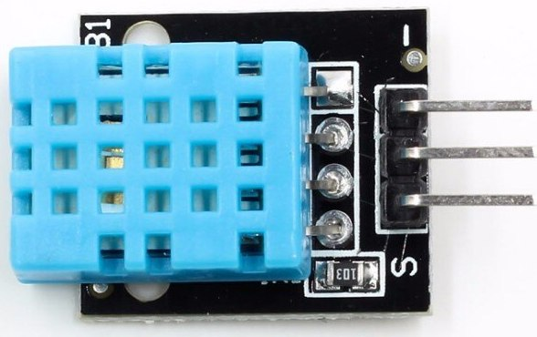
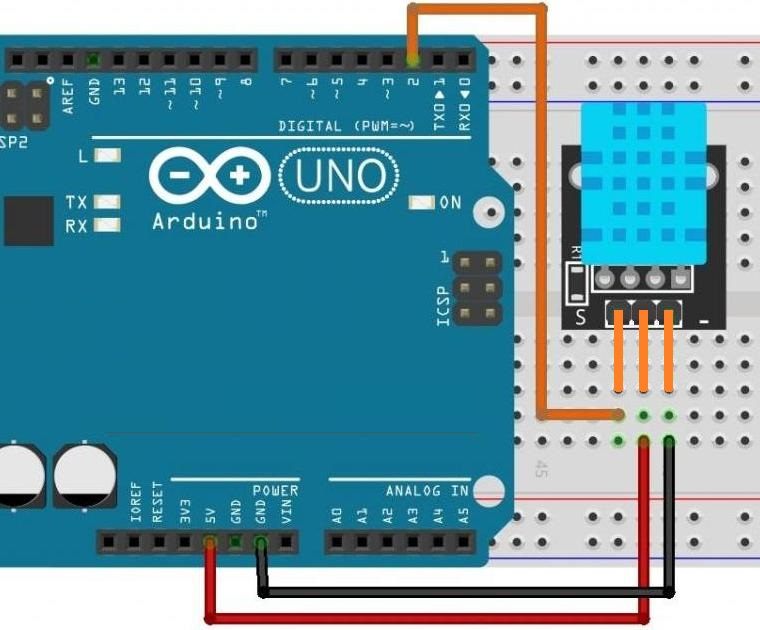

Датчик температуры и влажности KY-015
Плата модуля содержит основные компоненты: датчик температуры и относительной влажности DHT11 в синем корпусе, светодиод индикации питания и вилка соединителя. Внутри DHT11 небольшая плата с компонентами: емкостным датчиком влажности, терморезистором имеющим отрицательную характеристику и микроконтроллером.
Изготовитель вносит в память МК таблицу корректировки измерений каждого экземпляра для повышения точности работы. Данные модуля передаются в цифровом виде по интерфейсу 1- Wire. Датчик применяется для проектов "умный дом", в автоматике управления вентиляцией, кондиционированием, современных приборах сушки воздуха и аналогичных приборах.

Технические характеристики модуля KY-015:
- Напряжение питания — 3..5,5 В.
- Ток в режиме измерения — 0,5…2,5 мА.
- Ток в режиме ожидания — 150 мкА.
- Частота опроса не чаще одного раза в 1 с.
- Предельная длина экранированной линии связи — 20 м.
- Разрешающая способность — 8 бит.
- Стабильность — 1 %.
- Измерение влажности:
- Точность при температуре:
- 25°C — 4%;
- 0…50°C — 5%.
- Диапазон измерений при температуре:
- 0°C — 30…90% RH.
- 25°C — 20…90% RH.
- 50°C — 20…80% RH.
- Предельное время отклика — 15 c.
- Гистерезис — 1 %.
- Продолжительная температурная стабильность — 1%/год.
- Точность при температуре:
- Измерение температуры:
- Точность — 1…2 %.
- Диапазон — 0…50°C.
- Предельное время отклика — 30 c.
Назначение выводов (рис. 1) представлено в таблице 1.
Таблица 1
| Контакт | Назначение |
|---|---|
| S | информационный сигнал |
| VCC | "+" п итания |
| — | Общий (GND) |

Источники
funnydiy.net - Датчик температуры и влажности. Модуль KY-015 для Ардуино. Обзор
zi-zi.ru - Модуль KY-015 ( датчик влажности и температуры DHT11)
arduino-tex.ru - KY-015 - Модуль с датчиком температуры и влажности DHT11. Подключение к Arduino.